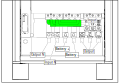

Convert the 25-50 kVA UPS from Dual Mains to Single Mains (Option)
-
Remove the two plates in the bottom of the UPS cabinet.
Figure 1. Front View of the UPS Cabinet 
-
Install the provided busbar assembly for single mains between
the unit input breaker UIB and the static switch input breaker SSIB
and fasten with the six busbar screws removed in earlier steps.
Figure 3. Front View of the UPS Cabinet 
Figure 4. Front View of the UPS Cabinet with the Busbar Assembly for Single Mains Installed 